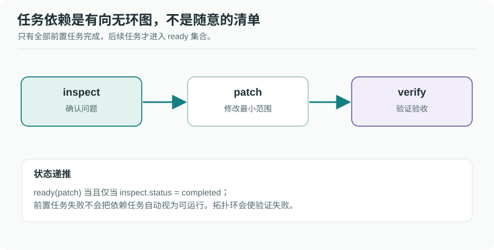
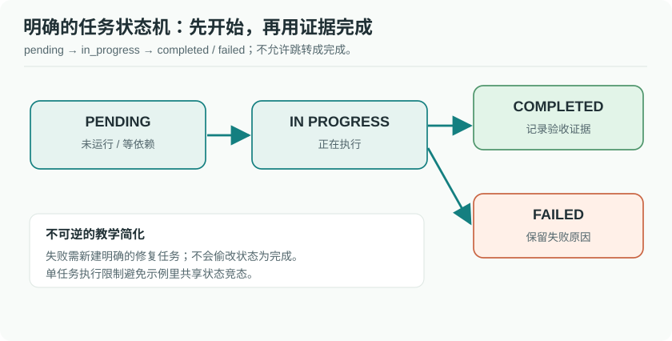

Task Planning：用依赖 DAG 管理 Agent 的工作进度
把长期任务从自然语言计划变为可验证的状态机：有向无环依赖、ready 检查、明确的验收证据和故障路径。
计划为什么必须成为外部状态，而不只是聊天内容
在一个需要数十次工具交互的修复任务里，模型可能反复提出相似操作、遗漏尚未验收的步骤，或把“已编辑文件”误认为“测试通过”。若只有自然语言计划，系统无法可靠地判断哪一步已获验证。因此最小任务系统需要稳定 ID、状态、依赖和验收证据。
任务板不替模型推理，它负责保存可机器检查的承诺：当前到底在做什么？上一步是否已经完成？失败是否被冒充完成？
依赖图：先确认问题，再修改，再验证

把任务表示为有向图 G=(V,E)：顶点是任务，若任务 B 依赖 A，就存在 A → B 的先决关系。只有所有依赖任务完成后，B 才属于 ready 集合。环意味着某些任务永远没有可启动的先决条件，因此必须在开始前拒绝。
board.add("inspect", "Inspect failing test")
board.add("patch", "Make minimal change", ("inspect",))
board.add("verify", "Run focused tests", ("patch",))
assert board.ready() == ["inspect"]状态机：pending 不允许直接变成 completed

| 状态 | 允许动作 | 关键检查 |
|---|---|---|
| pending | start（当依赖已完成） | 所有依赖达到 completed |
| in_progress | complete 或 fail | 完成时提供非空证据 |
| completed | 只读审计 | 不能无理由回到 pending |
| failed | 保留原因，建新修复任务 | 不能偷改为已完成 |
这一状态机是本教程采用的保守简化。真实任务系统还可能支持重试、跳过、阻塞、取消或人工重新打开任务，但都应有显式转换与审计。
用 Python 实现任务板及检查器
examples/task_board.py 通过三色深度优先搜索验证依赖环；增加任务、查询 ready 列表、启动、完成、失败均有明确状态约束：
from task_board import TaskBoard
board = TaskBoard()
board.add("inspect", "Inspect failing test")
board.add("patch", "Fix minimal code", ("inspect",))
board.start("inspect")
board.complete("inspect", "Reproduced AssertionError at test_x.py:12")
print(board.ready()) # ['patch']教学版只允许一个 in_progress 任务，避免并行写入同一工作区产生冲突。现实中可以并行运行真正独立的任务，但必须设计资源锁、冲突合并及依赖调度。
验收证据必须来自真实观察
“补丁已提交”可以是修改任务的证据，却不能自动证明测试任务完成。每个任务的完成条件应该能指向具体的验收步骤，例如：test_parser.py 在明确版本下的退出码与断言结果。让模型生成“测试通过”的文本而不执行测试，不是有效验证。
任务状态不是安全许可
即使规划器认为 patch 已 ready，工具执行仍必须单独通过文件权限、路径边界与用户批准。任务依赖图不会自动授权修改文件或访问秘密。
如何将状态带入新一轮模型请求
将 snapshot() 生成的任务 ID、状态与证据，以结构化上下文传给模型，可以减少“只靠对话记住进度”的压力。注意这只是我们自建 Harness 的选择。并不是要把任务板伪装成高优先级 System Prompt；用户工具结果与真实任务状态必须分别标注来源。
{
"tasks": [
{"id": "inspect", "status": "completed",
"evidence": "Failure reproduced"},
{"id": "patch", "status": "pending",
"depends_on": ["inspect"]}
],
"next_ready": ["patch"]
}真实系统还应该持久化状态、保存审批身份、记录重试次数，并在上下文摘要中保留尚未满足的验收条件。
用故障测试阻止伪完成
运行 python3 -m unittest discover -s examples -p 'test_*.py'。测试专门构造依赖环、未知前置 ID、未启动就完成、完成无证据、失败后直接完结及重复任务 ID，保证非法转移被拒绝。
blocked 状态；设计前置任务失败时自动显示阻塞原因，但不擅自改动其它任务的完成状态。将新增行为写成不依赖模型的单元测试。参考资料与边界
- Claude Code 官方功能总览 — 可以核查的内置工作流与扩展能力
- Anthropic：有效的长时 Agent Harness — 长期任务中的进度交接与可验证状态
- Tool Use 协议 — 工具结果不是模型自报状态
本文的 TaskBoard 是自建任务规划器，不声称对应 Claude Code 内部 TodoWrite 或任何官方私有数据结构。